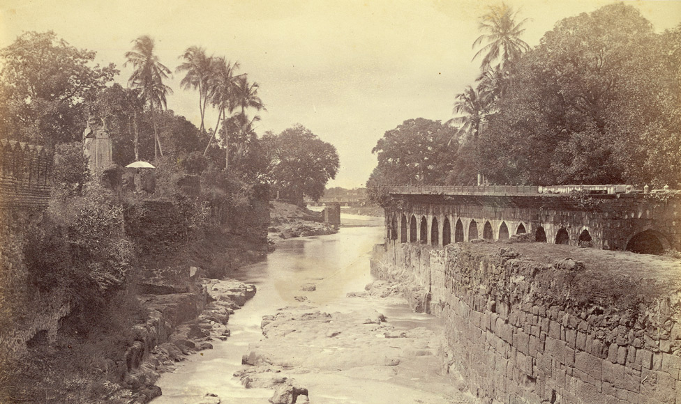

Khadki / the old city
c. 1610
Malik Ambar laid it out with streets, palaces, a wall and a water supply, in that order of priority. Aurangzeb expanded it and gave it his own name.
10 · Khadki — Malik Ambar's city
Founded c. 1610 · Mughal Deccan capital · Asaf Jahi seat to 1763
A city founded by a freed Ethiopian slave, watered by a Persian aqueduct he designed against his own minister's advice, renamed after the emperor who spent twenty years failing to conquer the region from it — and standing within thirty kilometres of two of the greatest sites of ancient Indian art.
Malik Ambar made the village of Khadki his headquarters and planned it properly: streets, palaces, a defensive wall and, first of all, water. From 1612 he designed the Nehr-e-Ambari, exploiting subterranean water in the mountain valleys north of the city — a gravity system of channels and tunnels, the main line about seven feet deep with a hundred and forty manholes for access and cleaning.
His wazir Mullah Mohammad dismissed the design as imaginary and preposterous. The first phase was finished in fifteen months at half the projected cost. The system supplied the city for three hundred and twenty-one years and at its height served a population of the order of seven hundred thousand.
This is the same Persian hydraulic tradition as Bidar's karez and Bijapur's tunnels, arriving with the same migration and put to work by a man who had arrived as cargo.
Aurangzeb, viceroy of the Deccan as a prince and emperor from 1658, expanded and renamed the city, and made it the base for the campaign that consumed the last twenty-six years of his life. Having destroyed Bijapur and Golconda in 1686 and 1687, he discovered that he had also destroyed the buffer that kept the Marathas in check, and spent the rest of his reign besieging hill fort after hill fort while Maratha horse emptied the country behind him.
The costs compounded in three directions at once. The treasury drained into a war that sieges could not win; the north was left to govern itself; and the Deccan — the richest region in India when he arrived — was reduced to a country that could not feed his own camp. Historians have called it the ulcer that destroyed the Mughal empire. He also, in effect, gave the Marathas their curriculum: twenty years of campaigning against a mobile enemy taught them how to fight an empire.
He died at Ahmadnagar in February 1707, near ninety. His last letters are the strangest documents in this history: I came a stranger into this world, and a stranger I depart; my valuable time has been passed vainly; I have committed numerous crimes, and know not with what punishment I may be seized.
He was buried at Khuldabad, twenty-four kilometres away, in an open grave paid for out of money he had earned copying the Quran — a red-stone platform less than three yards long with a cavity of bare earth in the middle, so that herbs grow on it. Curzon later added the marble screen.
Prince Azam Shah built it between 1668 and 1669 for his mother Dilras Banu Begum, and had it designed by Ata-ullah, son of the Taj Mahal's architect. The recorded cost is ₹6,68,203 and seven annas — against something on the order of thirty-two lakh for the Taj.
The economy shows: marble only on the lower portions and the dome, plaster above, and proportions that read as slightly too tall for their base. It is nonetheless the largest Mughal building in the Deccan, and in the right light entirely convincing.
It is a useful monument to stand in front of, because it is the exact moment the imperial idiom arrives here — and the exact measure of how much less money there was to build it with.
Thirty kilometres north-west, the Deccan's first golden age left its record in rock. At Ellora, thirty-four caves — Buddhist, Hindu and Jain, cut side by side into the same escarpment over four centuries, which is itself the most eloquent fact about them.
The masterpiece is the Kailasa temple, begun under the Rashtrakuta king Krishna I in the eighth century. It is not built; it is excavated. Masons began at the hilltop and cut downward and inward, removing an estimated 150,000 to 200,000 tonnes of rock to leave a free-standing multi-storey temple with gateway, courtyard, elephants and flagstaffs, still attached to the mother rock at its base. There is no possibility of correction in such a technique. Every cut is final.
A hundred kilometres north, Ajanta's thirty caves hold the largest surviving body of early Indian painting — preserved precisely because the site was abandoned to the jungle for something over a thousand years, and found again only in 1819 by a British hunting party. The officer who led it scratched his name onto a pillar of Cave 10, where it can still be read, which is why the rediscovery can be dated.
Gribble used these caves as his standing proof that the pre-Islamic Deccan was no wilderness. They are the answer to every chronicle that describes this country as empty before its conquerors arrived.
| Patron | Krishna I of the Rashtrakutas, 8th century |
| Method | Cut downward from the hilltop — not a single joined block |
| Rock removed | Estimated 150,000–200,000 tonnes |
| Courtyard | Roughly 82 × 46 m; the shrine rises about 30 m |
| Ellora | 34 caves — Buddhist, Hindu and Jain together |
| Ajanta | About 30 caves; painted 2nd c. BCE – 5th c. CE |
| Rediscovered | Ajanta, 1819, by a tiger-hunting party |
“I came a stranger into this world, and a stranger I depart… My valuable time has been passed vainly. I have committed numerous crimes, and know not with what punishment I may be seized.”Aurangzeb, last letters, 1707
The city sits at the bottom right; everything else runs north-west along one road — the fort at sixteen kilometres, Khuldabad at twenty-four, Ellora at thirty. Ajanta lies a hundred kilometres due north.
c. 1610
Malik Ambar laid it out with streets, palaces, a wall and a water supply, in that order of priority. Aurangzeb expanded it and gave it his own name.

1668–69
The Taj of the Deccan, built by a prince for his mother at a fraction of the original's budget — marble below, plaster above, and the largest Mughal building south of the Vindhyas.

c. 1695
A water mill driven by a siphoned underground channel from the hills, grinding grain for pilgrims at the dargah of Baba Shah Musafir — Ambar's hydraulics turned to charity.

from 1612
Seven feet deep with a hundred and forty manholes, dismissed by the wazir as preposterous, finished in fifteen months at half cost, and still supplying the city three centuries later.

c. 1187
Sixteen kilometres out: the basalt cone whose lower slopes were sheared into fifty metres of vertical rock. Every ruler in this history wanted it; none of them stormed it.

1445
Sixty-three metres of victory tower inside the fort, faced with Persian blue tile — raised over a Bahmani win against Vijayanagara, by a builder who was a slave.

khanqah c. 1327
The Chishti settlement founded by saints who came south in the 1327 migration — and the ground Aurangzeb chose, with an open grave, no dome, and herbs growing on the earth.

6th–10th c.
Thirty-four caves cut side by side by Buddhists, Hindus and Jains. The Kailasa temple was excavated downward from the hilltop — two hundred thousand tonnes removed to leave a building standing.

16th c. rebuild
The last and smallest of the twelve Jyotirlingas, beside Ellora — rebuilt by Shivaji's grandfather and given its present form by Ahilyabai Holkar.

2nd c. BCE – 6th c. CE
A hundred kilometres north in a horseshoe gorge: thirty caves holding the largest surviving body of early Indian painting, saved by a thousand years of being forgotten.